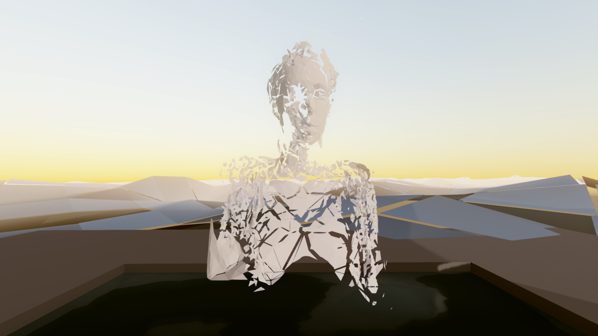

Paper Thin
Daniel Smith and Cameron Buckley
- 
Experience Now
Description
Paper-Thin is a series of curated virtual reality spaces hosting interactive artist installations. Each month Daniel Smith and his collaborator, Cameron Buckley, work with an emerging artist on an installation which contributes to the virtual architecture. When the architecture of Paper-Thin is completely filled, they create new architecture for new art, rather than de-installing older artworks. In this way, Paper-Thin has evolved into a growing archive of virtual artworks. Each virtual architecture and its constituent artist installations thereby becomes one “volume” of the archive. Contributing artists to Volume 1 include Alan Resnick, Hunter Jonakin, Daniel Baird, Haseeb Ahmed, Rachael Archibald, Hugo Arcier, and Andy Lomas. Volume 2 is currently in production, and will include contributions from Shane Mecklenburger, Adam Ferriss, Jeron Braxton, Martina Menegon, Brenna Murphy, Mark Dorf, and Raman K. Mustafa.
Because digital art has no material, and the involved technology is ever-changing, we can’t simply archive virtual art on a flash drive or “restore” artworks as one might restore a painting. Hard drives, flash drives, tape decks, and nearly all digital storage devices inevitably corrupt over time. As far as preservation, computer technology is so complex and interdependent, that one must preserve not only the artwork, but the operating system and technological hardware a given artwork requires.
Our archival approach is to collect virtual artworks into a singular format, so that the collection itself becomes a precious “object” that is worthy of protection. In theory this consolidated digital “object” is easier to maintain, because of its singular format, it creates a greater imperative for preservation. Part of the difficulty with digital preservation is the typically fragmentary nature of disparate works. Paper-Thin attempts to alleviate this problem without compromising artists–we don’t sell artwork like a gallery.
In addition to creating the imperative for preservation, Paper-Thin indefinitely hosts all art installations as downloadable executables and equivalent desktop standalone programs for Mac, Linux, and Windows. These executables are more stable formats than online 3D renderers–which we also support. In other words, anyone who wishes to can download all the artworks for free. This means that copies of the art are effectively distributed to an indefinite number of global users, and this wide distribution and user-base functions as part of the preservation of Paper-Thin.
Bios
Daniel Alexander Smith is a visual artist based in Boston, MA. In 2015 he founded Paper-Thin, an online virtual reality art archive, which he currently directs and curates with collaborator, Cameron Buckley. Daniel’s artwork has been exhibited nationally and internationallyat venues including the Indianapolis Museum of Art, The University of Richmond Museums, the CICA Museum in Gyeonggi-do, South Korea, SIGGRAPH, Boston Cyberarts, the Festival Internacional de Linguagem Eletronica in SãoPaulo, Brazil, the Athens Digital Arts Festival in Athens, Greece, as wellas universities and galleries across the country.
Recent works include Unfixed Architecture, a large,multi-channel video commission for the Boston Convention and Exhibition Center Marquee; Four and No Waves, a time based art installationaddressing how computers re-frame relationships with nature; and Of Things Which Do Not Appear,a collection of machine-made drawings exploring representation as technological abstraction.
Cameron Buckley is an intermedia artist working in just about every digital medium he can get his hands on. He is a current MFA Candidate at Indiana University in Digital Art. He co-founded Paper-Thin, a virtual art archive.